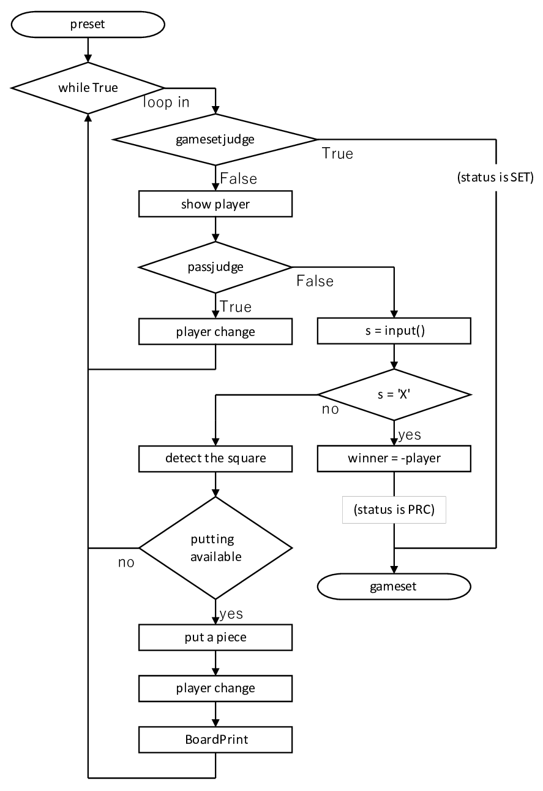

Stage 6 ゲームを運用する
今回ついにコマンドライン(Mac だとターミナル)で動かすリバーシのコーディングが完結します。これでようやくゲームっぽくなりますよ。
今回は main.py と IO.py をいじくっていきます。main はいかにも「このファイルがメインじゃ」って感じがしていいでしょ。IO は input & output の意味でつけていますが、output の機能は入っていません。だって Board.BoardPrint がありますから。
目次
6-1 初期設定
まず main.py です。最初に必要なモジュールなりファイルなりをインポートします。相変わらずではありますが、config.py は宣言なしで使えるようにしましょう。Board クラスのインスタンス(クラスのオブジェクト)に main_board を作り、player には黒を入れます。先手が黒なのはルールで決まっていますので、よほど思い入れでもない限り player は黒にしておきましょう。
これが終わったらとりあえず初期配置の盤面を見せます。何も表示されていない画面で「はい好きなところに石置いて」って言われても、どうしようもないでしょ。
6-2 からは while ループに突入します。中身はざっとこんな感じになっています。予め様子を押さえておいてください。見た目ほど難しくありませんからご安心を。
6-2 各種判定
上のフリーチャートに則っていくと、ループの最初に gamesetjudge で決着がすでについているかを確認するんでした。決着がついていたら当然ループは脱出してもらいます。ここで特に、gamesetjudge を発動し True がリターンされた時点で game_status が GAME_SET になっていることに注意してくださいね。ループを抜けた後に結構厄介な問題になります。
今度はどちらのプレーヤーの番かを判断し、ユーザーにもそれを見せています。ほら、みなさんだってプレーしてる最中に話し込んでたりすると「あれ、今どっちの番だっけ」ってなったりするでしょ。これも思いやりですよ、思いやり。
今度はパスしなければいけないかを判定します。ご存知の通りパスをさせられる際は「このマスに石置きたいのに」だなんて駄々は通用しませんので、問答無用で相手の番に持ち込まないといけません。ですから、一応相手が「急に向こうの番になった」とビックリしないように「あなたパスですよ」とほのめかしてあげて、心の準備ができたら自分の手でパスさせるようにしています。当然 player は相手に移します。
6-3 入力処理
2-1 で確認したとおり、入力は行と列の番号を使わせましょう。s という変数に入力の文字列を格納します。
ここでユーザーには投了(負けを自分で認める)機会を差し上げてください。私のコードでは "x" や "X" を入力してあげることで相手の勝ちとなるようになっています。ここでご注意いただきたいのですが、投了を発動して winner を相手にしても、game_status はまだ GAME_PRC の状態です。先ほどの gamesetjudge の場合と区別しているのはしっかり理由がありますので、ループを脱離したあとにもれなく確認してくださいね。
s が "x" の類でなければ、プレーヤーは自分の石を置きたいマスを指定してきたものと受け取れます。行と列がそれぞれ数字とアルファベットで指定されますので、それを解析してコンピューターでもわかる形にしないといけません。それをするのが IO.py ファイルの InputFormat 関数です。s を引数にして有効な場合は [row, col] のインデックス(0 スタート)の形でリストを、無効の場合は False をリターンさせます。さて、この関数の中に ord 関数がありますね。一般にコンピューター上で識別できる文字には UNICODE といって一文字一文字に番号が振られているのですが、ord はその番号をリターンします。特にアルファベットは順番通りに UNICODE が振られていますので、文字が a から h の中にあるか、ご覧の通り単純な不等式で調べられます。
この InputFormat 関数の返り値を square という変数に格納します。この値が False であれば、紛れもなく無効な入力なので、「入力がなってない」として、同じプレーヤーにもう一度マスを指定し直させるため continue を発動です。それ以外では一応 square は一丁前の形にはなっていますので、main_board.turn を実行してみて、これで False「石を一つも裏返せない」が出るようなら、やはりもう一度入力ですね。逆に True が返されれば「裏返し成功」ということで相手の番に移ります。
相手の番になるため忘れずに player の操作をしてください。そして何より新しくなった盤面をユーザーに見せることも抜かりなく。
6-4 ゲームセット後の操作
決着がついて while ループを抜けたら、とりあえず GAME SET くらいは書いておきましょう。そして counter に countpiece メソッドを使って盤上の石の数のリストを格納します。ここまでが下ごしらえです。
さて、ここからが面倒なのですが、先ほど gamesetjudge を使ってループを脱出したときは GAME_SET, 投了して脱離したら GAME_SET という話しましたよね。その話がここで活きてくるんです。gamesetjudge を使うときは、そのメソッドの性質上両者ともに石の置き場がありませんから、石の数だけ見れば勝敗がわかります。しかし投了したときは、例え石の数が多くても「私の負けだ」と認めた方が必ず負けですから、counter に頼るわけにはいきません。
場合わけしている中で上の方が投了した場合、下の else の方がそれ以外です。投了側では winner がそのまま勝者になります。論理的にはあり得ませんが、一応念には念を入れて引き分けなど winner がどちらのプレーヤーも表していない場合でも対応できるようにはなっています。
下側は当然 count に基づき勝者を判断します。counter[0] が黒の数、counter[1] が白の数でしたね。
最後に GAME OVER と出力して、私のコードはすべて終わりです。お疲れ様でした。
ここまでコーディングするのは大変だったでしょう。しかしリバーシはボードゲームの中でもそれなりに簡単な部類に含まれます。これがチェスだったら Stage が 10 を超えていますし、将棋だったら「持ち駒」も考えないといけないので盤面以外にも気を払わないといけなくなります。
ですが私のリバーシのコードをコンプリートした皆さんなら、チェスだの将棋だのそのほかありとあらゆるゲームもコーディングは無理ではないでしょう。いやいや、簡単とは言いませんよ。そりゃ難しいですよ、ルール多いんですし。しかし、難しいゲームほどプレーしたとき楽しいですし、何よりコーディングし終わったら達成感がハンパない。
もし私のコードやこのサイトで「ここバグってる」「ここ誤字ある」などございましたら、お気軽にお声がけくださいませ。連絡先はこのページの一番下、フッターのところにあります。
また、私の他のコードにも興味がおありであれば、こちらのリンクから飛んでください。いろいろ面白いのがありますよ。